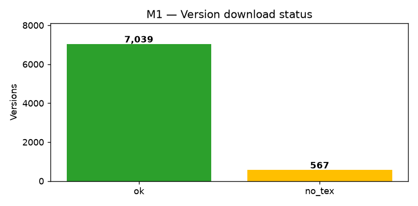

Milestone 1 — Data Crawling#
Pipeline thu thập metadata, source .tex/.bib của mọi version và reference metadata của 20.000 publication được phân công cho toàn nhóm (4 thành viên, mỗi thành viên 5.000 publication), đồng thời tôn trọng rate-limit của arXiv (3 s/request) và Semantic Scholar.
Kết quả chính#
Metric |
Giá trị |
|---|---|
Publications được giao cho toàn nhóm |
20 000 |
Số range được phân công |
4 × 5 000 publications |
Publications trong corpus được thống kê bên dưới |
5 000 |
Publications tìm thấy trong corpus này |
5 000 |
Tổng version directories |
7 606 |
Version có |
7 039 |
Version PDF-only / không có |
567 |
File |
23 586 |
File |
5 340 |
Số dòng bảng |
90 355 |
Kích thước corpus |
~1,35 GB |
Các metric từ Tổng version directories trở xuống là số liệu đo trên corpus 5.000 publication hiện được dùng để lập báo cáo Milestone 1; chúng không được nhân bốn vì chưa phải số liệu tổng hợp từ cả bốn range.
Output tables#
corpus/2605-XXXXX/paper.json # metadata + danh sách version
corpus/2605-XXXXX/references.json # reference từ Semantic Scholar
corpus/2605-XXXXX/v1/...vN/ # .tex/.bib + metadata.json (mỗi version)
work/tables/papers.parquet # arxiv_id, title, authors, dates, venue
work/tables/references.parquet # arxiv_id, ref_arxiv_id, ref_title, ...
Coverage version#


Trong 7 606 version, 92,5 % có source TeX (7 039/7 606) và 7,5 % là PDF-only (567/7 606). Version không có TeX được ghi lại với status = no_tex thay vì bị bỏ qua im lặng — cơ chế này đảm bảo Milestone 2 biết chính xác version nào cần xử lý.
Hiệu năng#
Metric |
Giá trị |
|---|---|
Wall time (crawl đầy đủ) |
~1 250 s (~21 phút) |
Discovery time |
~581 s |
Số request arXiv |
85 (throttled: 0) |
Peak RAM |
~277 MB |
Average RAM |
~113 MB |
Crawler chạy tuần tự (download_workers = 1), resume được khi gián đoạn: version/reference đã tải xong được bỏ qua ở lần chạy lại.
Notebook#
See also
Xem notebook run_on_colab.ipynb để chạy lại pipeline crawl.